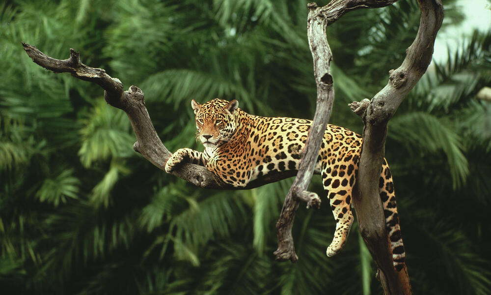
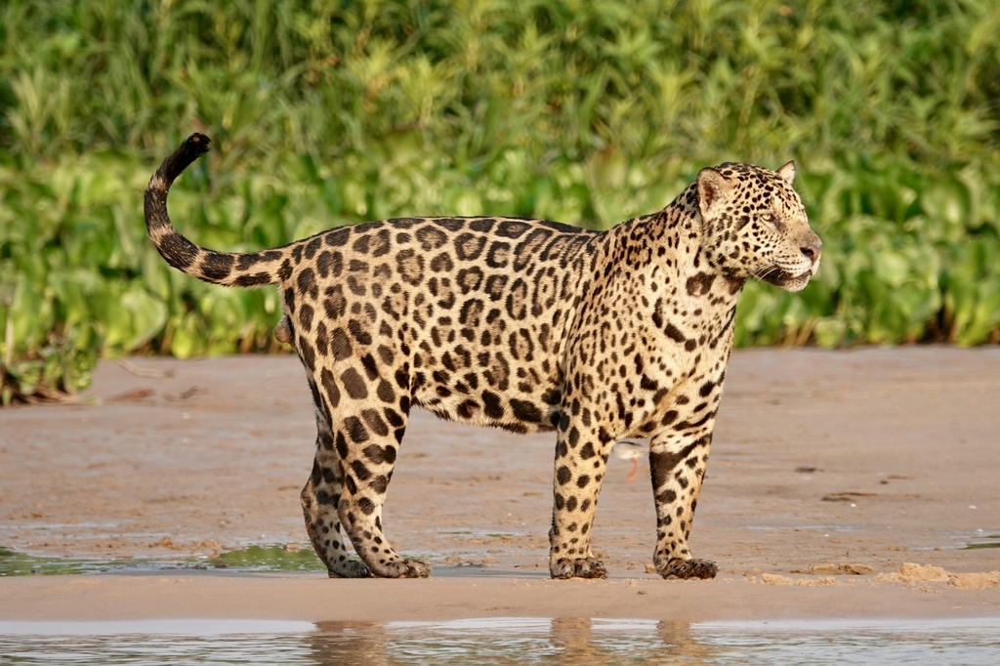
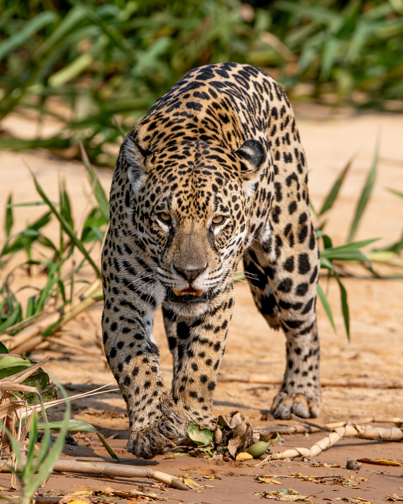

El jaguar (Panthera onca) es el felino más grande de América y un depredador clave en los ecosistemas tropicales. Habita selvas y bosques desde México hasta el norte de Argentina. Su población ha disminuido por la pérdida de hábitat, la fragmentación de corredores biológicos y la caza ilegal. La conservación del jaguar implica proteger grandes áreas continuas de selva, restaurar conectividad y trabajar con comunidades locales para prevenir conflictos.


